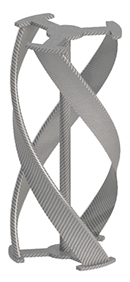
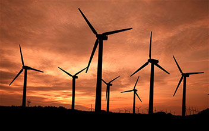
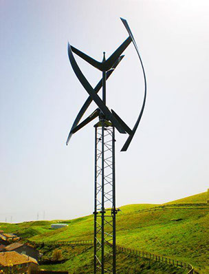

TurBinD
TurBinD is a small scale vertical axis wind turbine (VAWT) for a small cell phone charging station. The turbine uses a Garlov style with 3 helical blades that can rotate with any wind direction. The Garlov style turbine uses airplane wing like blades that creates lift which causes rotation. The use of a VAWT was determined to be the best for this application because no wind direction tracking, lower noise level, less area needed, and considered more ascetically pleasing. The TurBinD turbine rotates a small generator which then powers a USB port that is usable by an USB powered charger. The TurBinD charging stations will be placed in high traffic areas of campus where people tent to study outside, such as McKeldin mall.
Wind Energy
For centuries wind has been harnessed by turbines to be used by humans. Today wind energy is captured with many different types of wind turbines which change the energy from the wind into electrical energy to power the grid. Many turbines today are very large reaching up the 350 feet tall. These turbines can produce very high amounts of energy powering thousands of homes every day. However these turbines require a huge amount of space and can be associated with a few negative ecological effects. These large scale turbines are only a piece of the entire wind energy industry.
Small Scale Wind Energy
Small scale wind is defined as wind turbines with an energy rating of 100 kilowatts (kW) or less. Turbines in this category range in size from smaller than 1 kW for off-grid applications to 100 kW turbines that can provide power for small villages. Fifty-four small turbine models are offered commercially in the United States for applications including homes, schools, commercial and industrial facilities, telecommunications, farms and ranches, and communities. By the end of 2012, more than 150,000 small wind turbines were installed in the United States. Today, U.S. manufacturers account for more than 70 percent of the U.S. small turbine market. On average, a typical American home would require a 5 kW turbine to meet all its electricity needs. For a wind turbine system large enough to power an entire home costs, on average, $30,000, but can range from $10,000 to $70,000. This cost can be offset through federal and state tax rebates for installing small wind systems. The payback period for these small scale wind systems typically range from 6 - 30 years depending on the cost of the turbine and the location of the turbine. Small scale wind energy is a great way to add sustainable energy at a relatively low cost.
UMD Wind
The University of Maryland spends over 60 million dollars a year on energy and uses 31 megawatts every hour. Of this energy 23%, or 60 gigawatts, is from sustainable sources. The off campus energy primary comes from 4 sites: Severn solar array, Roth Rock wind farm, The Pinnacle Project, and the Mount St. Marys solar array. These sites project campus with 65 megawatts of wind and up to 600 megawatts of solar every year. Theses sites are helping the university become carbon independent and more sustainable, but because these are off-site many students and visitors never know about them and how much of our energy is from sustainable sources.
Click here to learn more about UMD energy.


Copyright © 2016 TurBinD